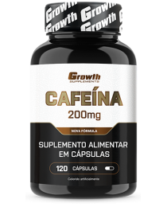
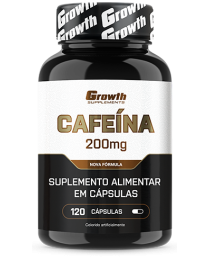

Preencha os campos para realizar o cadastro
| Nome | Telefone | CPF | Data de Nascimento | |
|---|---|---|---|---|
| Eduardo | eduardogrunitzky@gmail.com | 41 98788-6113 | 131.164.409-13 | 10/12/2005 |
| Robert | robert@gmail.com | 41 99988-7766 | 223.233.333-22 | 11/11/2011 |
Excercícios:
Planos de Treino:
Importância da Variedade:
Nutrição e Descanso:
Nossos Produtos:
 
